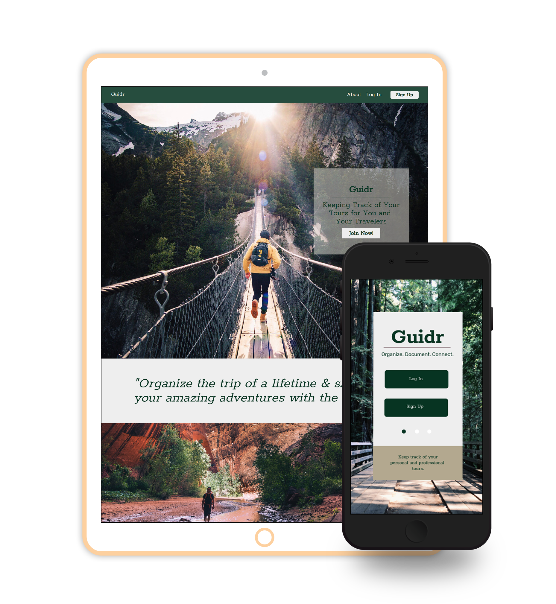

Guidr
Keeping Track of Your Tours for You and
Your Travelers
Keeping Track of Your Tours for You and
Your Travelers

The idea of taking a walk in the countryside for pleasure developed in the 18th century, and arose because of changing attitudes to the landscape and nature associated with the Romantic movement. Thomas West, an English priest, popularized the idea of walking for pleasure in his guide to the Lake District of 1778.
To encourage the taste of visiting the lakes by furnishing the traveller with a Guide; and for that purpose, the writer has here collected and laid before him, all the select stations and points of view, noticed by those authors who have last made the tour of the lakes, verified by his own repeated observations.
Document
The idea of taking a walk in the countryside for pleasure developed in the 18th century, and arose because of changing attitudes to the landscape and nature associated with the Romantic movement. Thomas West, an English priest, popularized the idea of walking for pleasure in his guide to the Lake District of 1778.
To encourage the taste of visiting the lakes by furnishing the traveller with a Guide; and for that purpose, the writer has here collected and laid before him, all the select stations and points of view, noticed by those authors who have last made the tour of the lakes, verified by his own repeated observations.